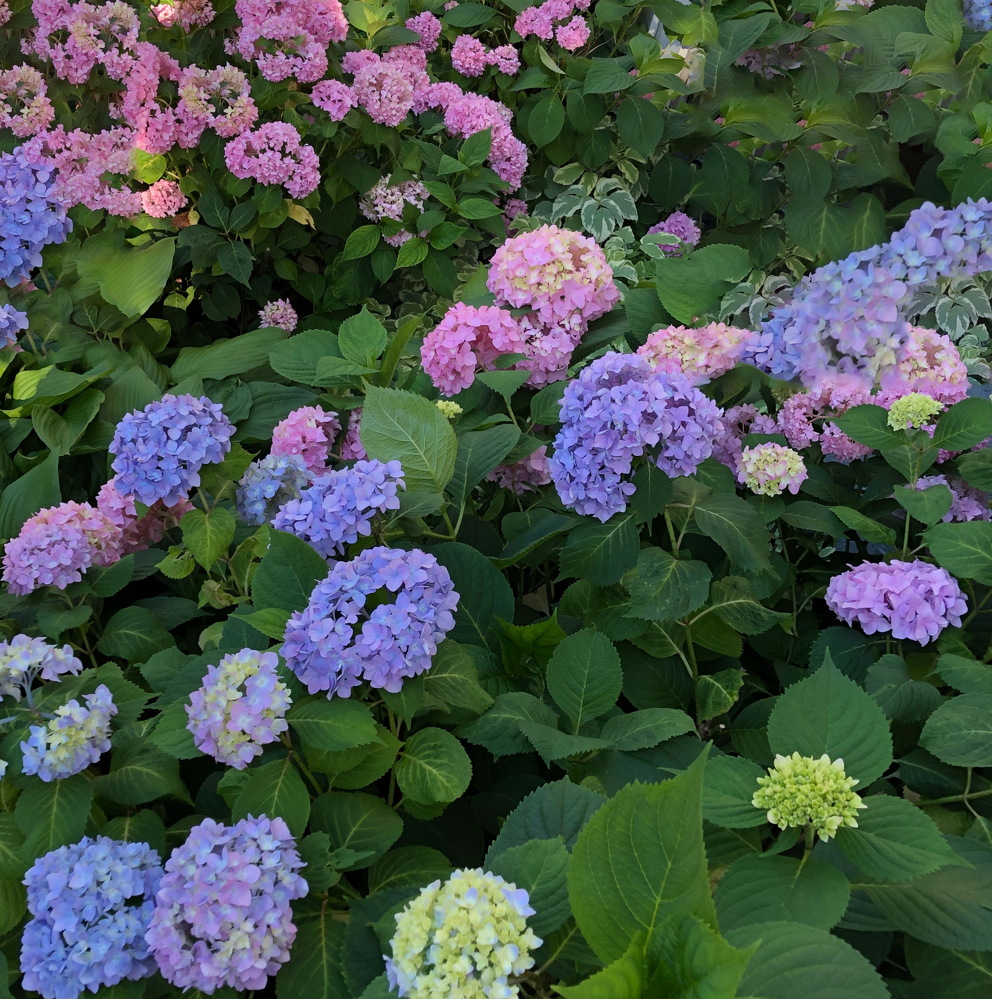

I never had a green thumb. Mostly I kill houseplants. But a few years ago, we found a house that I loved, which came with a yard that I did not love; it totally overwhelmed me. It seemed like there was one of everything in the yard: camellias and hydrangea (3 varieties!), lilacs and irises (2 varieties!), asters and roses and peonies, too. They grew over and around each other, and by June each year, the cacaphony of flora, not to mention weeds, was completely beyond human control, leaving me too intimidated to even begin trying to maintain order.
The pandemic opened up an opportunity to impose order on the disorder. While nearly everything was closed, and my family was confined to our house, I could work on the yard. In the breaks between remote meetings, I pulled out the bearded irises that I couldn't stand, and returned to Zoom triumphant. While my daughter was watching an episode of Avatar: The Last Airbender, I pruned the giant hydrangea taking over the yard. And when I was so frustrated by the rest of the world, I pulled weeds for a half an hour. Never have I felt so in control during a completely out-of-control time as I did when seeing the immediate results of my hard work.
Foot by foot, I tackled the chaos (with a little help from a landscaping company). The pandemic lockdown in DC tapered to a close before I got to the backyard, but my relationship to plants has changed. I still don't have a green thumb, but I have a much greater appreciation for the benefits of gardening.